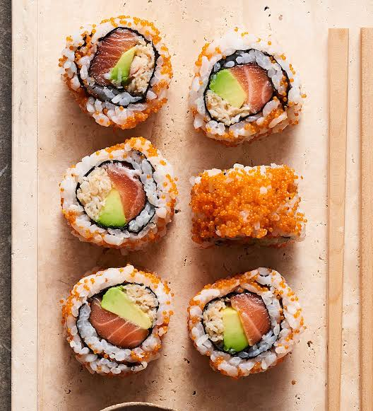

Sushi Rolls
To go back to the Index, Click Here

Sushi Rolls
A staple of Japanese cuisine that elegantly balances the sticky tang of seasoned short-grain rice with the fresh, clean flavors of raw seafood and crisp vegetables, all rolled tightly inside a sheet of dried seaweed.
Ingredients
- 2 cups short-grain sushi rice
- 1/4 cup rice vinegar
- 2 tbsp sugar and 1 tsp salt
- Nori (dried seaweed) sheets
- Sushi-grade salmon or tuna (sliced into strips)
- Cucumber and avocado (sliced into matchsticks)
Steps
- Cook the sushi rice according to package directions.
- Gently fold the rice vinegar, sugar, and salt into the hot rice, then let it cool to room temperature.
- Lay a sheet of nori flat on a bamboo sushi rolling mat.
- Spread a thin, even layer of rice over the nori, leaving a half-inch border at the top edge.
- Arrange the seafood and vegetable strips horizontally across the center of the rice.
- Lift the edge of the bamboo mat closest to you and roll it tightly over the fillings.
- Slice the roll into individual bite-sized pieces using a sharp, wet knife.